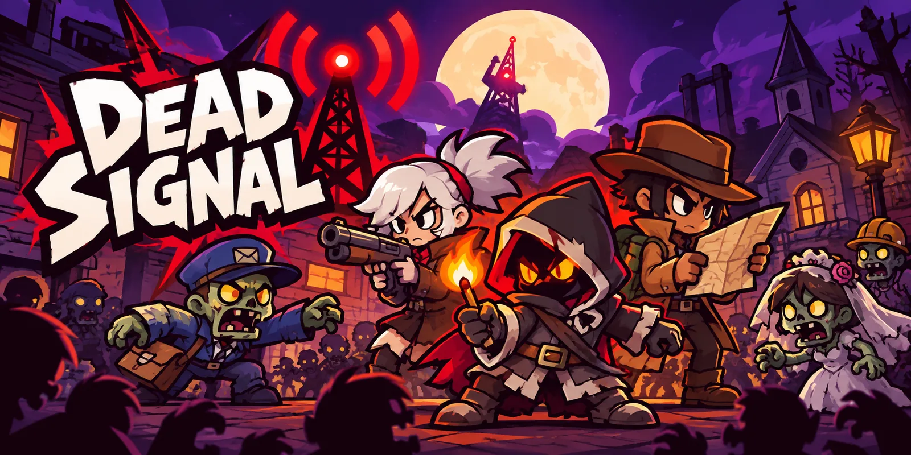
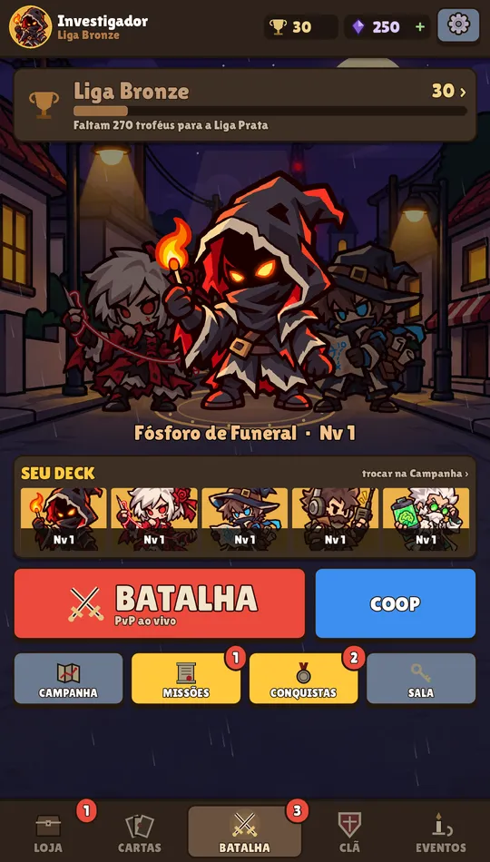
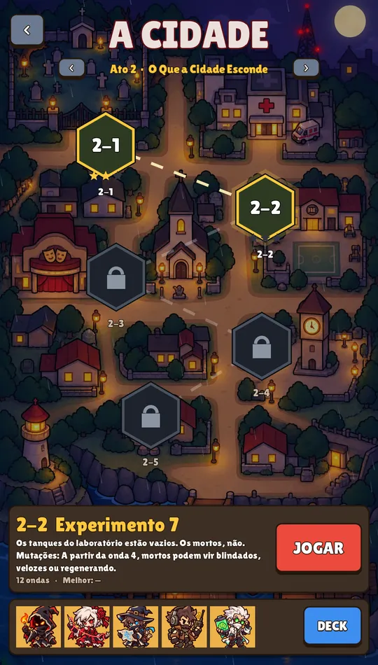
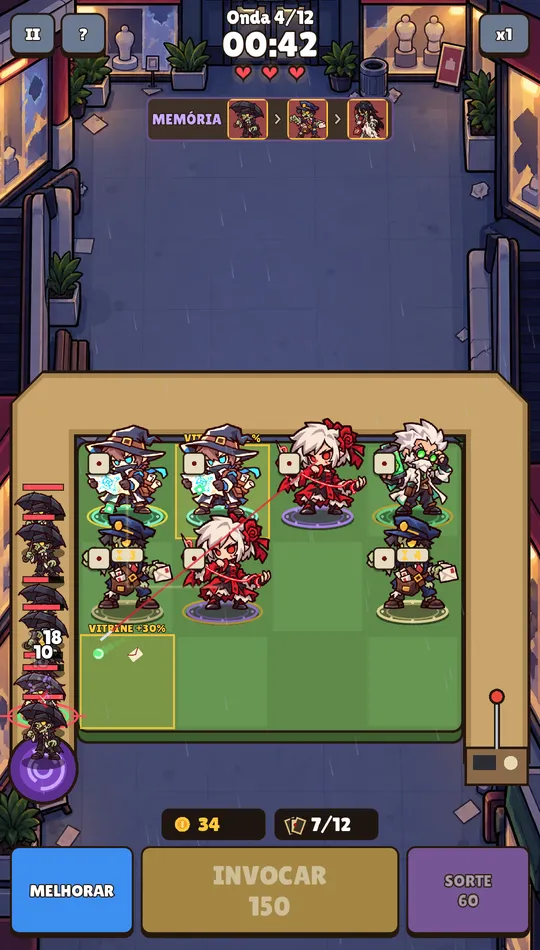
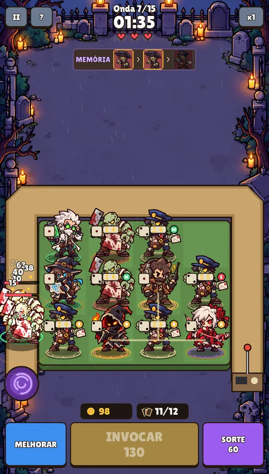
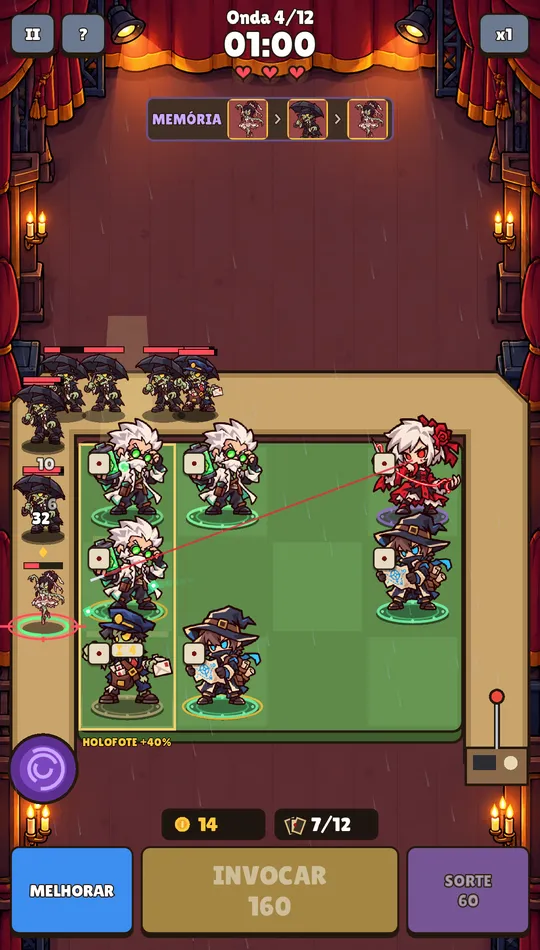
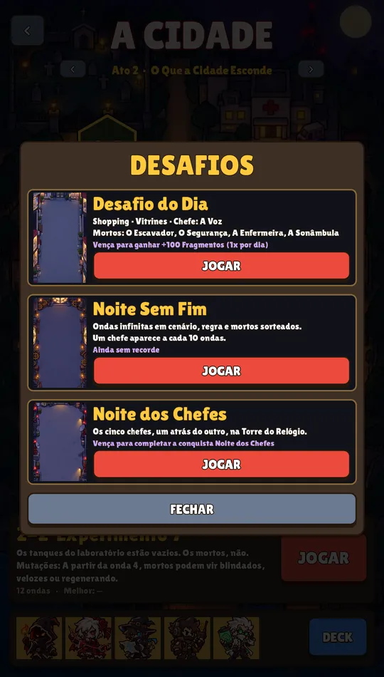

Invoque e funda
Cada INVOCAR traz um investigador aleatório. Junte dois iguais e ele sobe de nível, ganhando um Traço novo.

Invoque investigadores do sobrenatural, funda peças iguais, conte com a SORTE e salve a cidade dos mortos-vivos.
Partidas rápidas, decisões a cada segundo. Os mortos sobem pelo caminho e você só tem 3 vidas.
Cada INVOCAR traz um investigador aleatório. Junte dois iguais e ele sobe de nível, ganhando um Traço novo.
Pague ECO e tente tirar uma peça de nível 2 ou 3. Ou dê azar. Melhore cartas no meio da partida e domine zumbis enfraquecidos.
Dez chefes, da Noiva e do Prefeito à Matriarca, ao Condutor e ao Leviatã. Cada um quebra as regras do tabuleiro de um jeito diferente.
Especialistas no sobrenatural. Cada um com um poder diferente, e todos ficam mais fortes quando você funde peças iguais.
Eles não estão mortos, só esqueceram quem eram. E cada um tem um truque.
30 segundos de gameplay real, sem montagem enganosa.






O jogo está em teste no Google Play. Três passos, com a mesma conta Google do seu celular Android:
Baixe pela Play Store. Fique no teste por pelo menos 14 dias: isso ajuda o jogo a ser lançado para todo mundo!
Abrir na Play StorePode levar alguns minutos depois do passo 2 para o jogo aparecer na loja. Só Android por enquanto.
Sim. Tudo o que importa para vencer se ganha jogando. Existem pacotes opcionais de Fragmentos, sem itens sorteados pagos e sem anúncios.
Ainda não. O teste é só para Android pelo Google Play.
A campanha funciona offline. Os modos online (PvP e Coop) estão em teste e dependem do servidor.
14 anos no Brasil (violência de fantasia e terror leve, interação online).
Mande no canal #bugs do Discord ou pelo e-mail arreche7763@gmail.com.